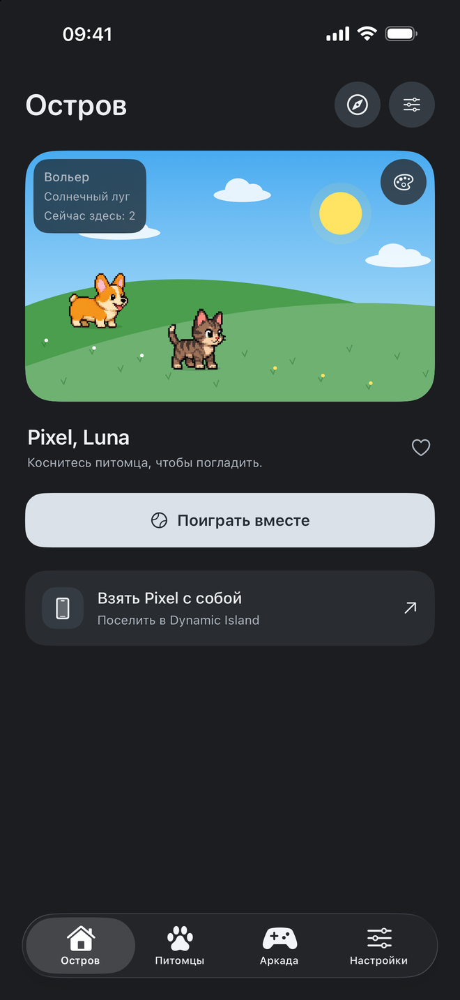
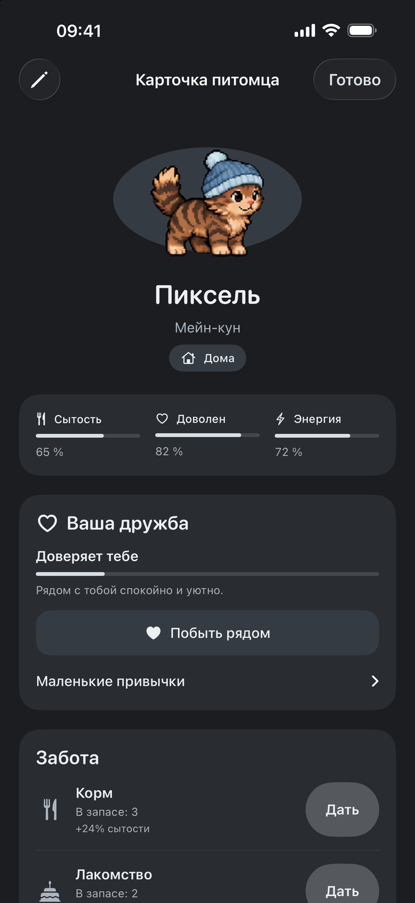
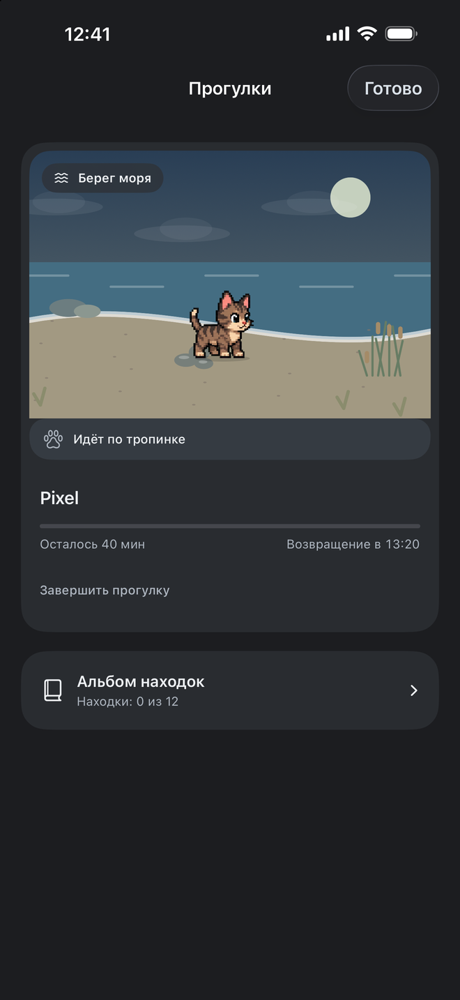
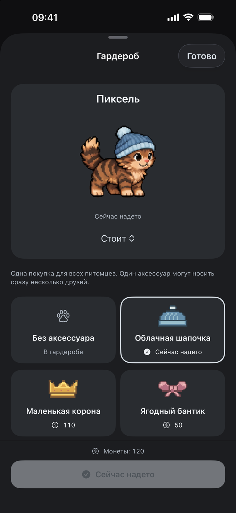

Дом с характером
Выберите питомцев и обстановку. Коробка, лежанка или качели станут частью их маленькой жизни.
Пиксельные друзья для iPhone
Поселите рядом любимых питомцев. Обустройте их дом, отправляйтесь на прогулки и собирайте маленькие воспоминания.
Готовится к выпуску · iPhone · iOS 17 и новее

В своём ритме
Покормить друга, примерить ему шапку или посмотреть, как соседи знакомятся. Без обязательных серий посещений и штрафов для дружбы за пропущенный день.
Выберите питомцев и обстановку. Коробка, лежанка или качели станут частью их маленькой жизни.
Отправляйте друзей исследовать разные места. Находки остаются в альбоме, а открытками можно поделиться.
Четыре аркады для короткой паузы. Зарабатывайте монеты и выбирайте уход, предметы и аксессуары.
Один остров — много маленьких дел
У питомца есть имя, любимые занятия и ваши общие воспоминания. Всё это — в его личной карточке.



Снимки текущей версии в симуляторе iPhone. Dynamic Island доступен на совместимых моделях; показ и обновления Live Activity определяет iOS.
Мы на связи
Если что-то пошло не так или хочется предложить улучшение — напишите автору.
bortone52@yandex.ruУкажите модель iPhone, версию iOS и приложения и что произошло. Снимок экрана поможет, если на нём нет личных данных. Пароли и реквизиты карты не нужны.
На вкладке «Остров» нажмите кнопку, чтобы взять питомца с собой. Питомец появится в Live Activity на экране блокировки, а на совместимом iPhone — и в Dynamic Island. Этим же действием можно вернуть его домой. Питомца на прогулке сначала нужно дождаться.
Проверьте, поддерживает ли ваш iPhone Dynamic Island и разрешены ли Live Activities для Pet Island в настройках iOS. Система решает, когда показывать и обновлять активность. На Always-On Display питомец отдыхает; непрерывная фоновая анимация не гарантируется.
Прогулки открываются кнопкой компаса на вкладке «Остров». Для ухода и гардероба откройте «Питомцы» и нажмите на карточку друга. Предметы, аксессуары и запасы доступны в «Аркада → Магазин»; покупки там оплачиваются игровыми монетами.
Откройте «Настройки → Язык приложения» и перейдите в настройки iOS. Выберите язык для Pet Island. Если пункта «Язык» нет, добавьте второй язык в «Основные → Язык и регион», сохранив текущий основной, затем вернитесь в настройки приложения. Остров и основной язык iPhone сохранятся.
Откройте «Настройки → Копия острова», экспортируйте файл и сохраните его в выбранном месте. Для переноса передайте его на другое устройство и импортируйте в Pet Island. Перед восстановлением верните питомца из Live Activity домой. Импорт заменяет текущий остров после подтверждения; предыдущая версия сохраняется в разделе «Остров до восстановления». Автоматической синхронизации между устройствами нет.
Нет. Это добровольный разовый платёж через Apple, без подписки, монет и дополнительных функций. Цены и доступность зависят от App Store. Для игры поддержка не требуется. Вопросы о списаниях можно проверить в истории покупок Apple; запрос возврата рассматривает Apple по своим правилам.